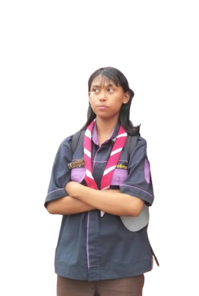
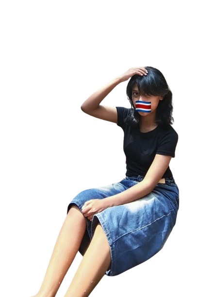
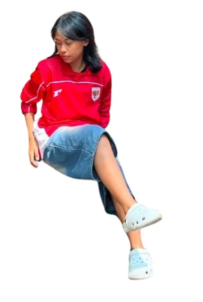

Pelajar Desain Komunikasi Visual yang suka membuat karya visual dan aktif di organisasi.
Saya pelajar SMK Negeri 5 Malang jurusan Desain Komunikasi Visual. Saya suka mengubah ide menjadi desain yang rapi dan mudah diingat, dan belajar disiplin serta kerja sama lewat Paskibra dan Pramuka.

